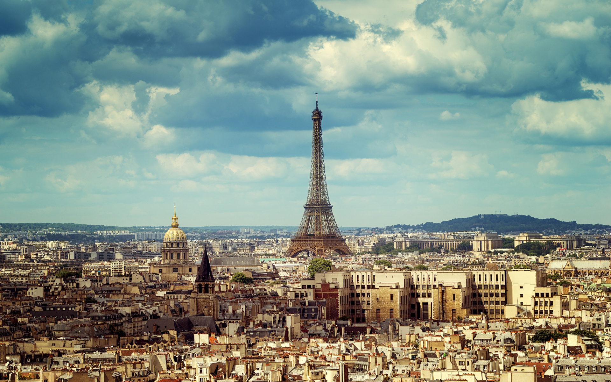
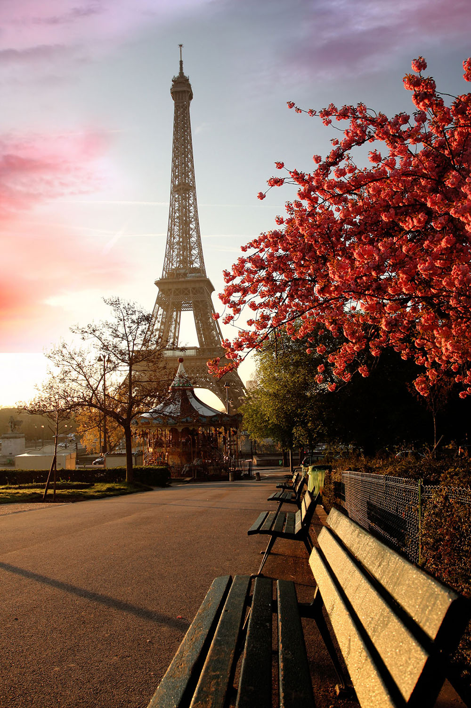
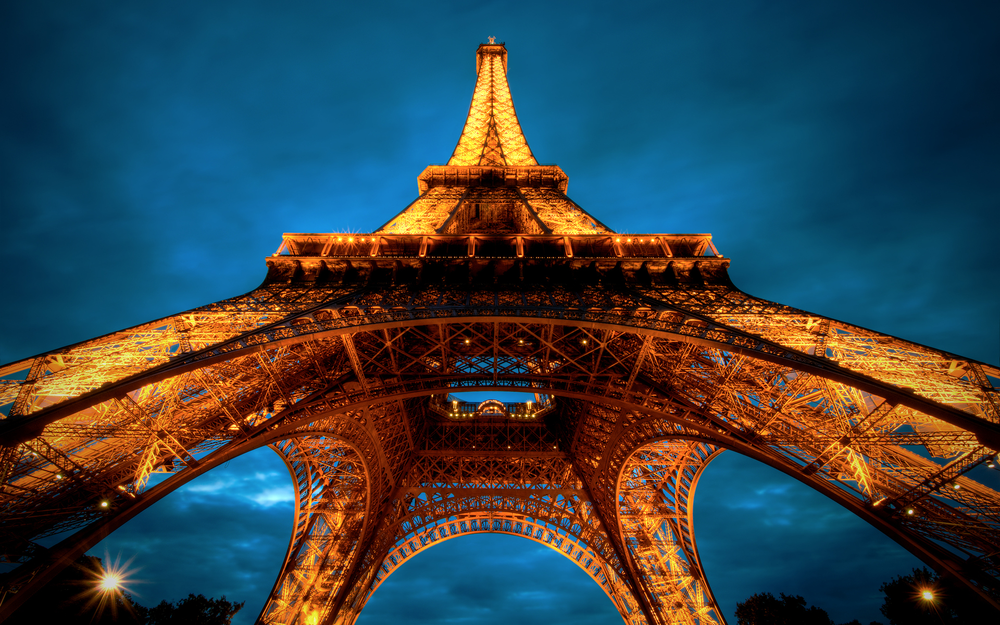

Евразия
Евразия
Вулкан Фудзияма, Япония

Главный кратер вулкана Фудзияма расположен на разломе, который является частью Тихоокеанского пояса, между Евразийской плитой, Охотской плитой и Филиппинской плитой. Хотя основная фаза вулканической деятельности Фудзиямы происходила 11-8 тысяч лет назад, вулкан не считается потухшим. С 781 г. произошло 10 извержений, в том числе три значительных. Последнее извержение произошло с 28 октября 1707 года по 1 января 1708 года. Оно сопровождалось сильным землетрясением 28 октября 1707 года.
Вулкан Фудзияма – кроме того, что это действующий вулкан, является и самой высокой горой Японии, высота которой 3776 м. над уровнем моря. Вулкан расположен на острове Хонсю, к юго-западу от столицы Токио. В 2013 году он был включен в Список всемирного наследия ЮНЕСКО как объект культурного наследия и источника художественного вдохновения. Это вулкан почитается как священная гора и является визитной карточкой Японии.
Происхождение Фудзиямы, на топографию которого повлияла вулканическая активность, неизвестно. Согласно народной традиции, гора образовалась после землетрясения в 286 г. до н.э. Вулканологи считают, что нынешний вулкан – это результат четырех отдельных фаз вулканической активности, характеризующие его форму и структуру. Правильная коническая форма горы является следствием наложения слоев затвердевшей лавы и вулканического пепла.
Эйфелева башня, Франция
Эйфелева башня — самая узнаваемая достопримечательность Парижа, названная в честь своего создателя и принимающая более 6 миллионов посетителей ежегодно. Башня находится в 7-м округе французской столицы, в северо-западной части Марсова поля..
Разработкой художественного облика Эйфелевой башни занимался Стефан Совестр. Для придания чугунной конструкции большей изысканности архитектор предложил добавить арки между опорами первого этажа. Они символизировали собой вход на выставку и делали сооружение изящнее. Кроме этого, Совестр задумал на различных этажах сооружения расположить просторные застеклённые залы, а верх башни немного закруглить.


На строительство башни требовалось 7,8 млн франков, но государство выделило Эйфелю лишь полтора миллиона. Инженер согласился внести недостающую сумму из собственных средств, но взамен потребовал отдать ему башню в аренду на 25 лет. В начале 1887 года французские власти, мэрия Парижа и Эйфель заключили соответствующее соглашение и строительство началось.
Все 18 000 деталей конструкции изготавливались на собственном заводе Гюстава в местечке Леваллуа недалеко от французской столицы. Благодаря тщательно выверенным чертежам работа по монтажу башни продвигалась очень быстро. Масса отдельных элементов сооружения не превышала 3 тонн, что значительно облегчало его сборку.
Кунгурская ледяная пещера, Россия
Кунгурская ледяная пещера – одна из самых известных и популярных туристических достопримечательностей Урала. Одна из главных «визитных карточек» нашего региона. Ни одна другая российская пещера не имеет столь богатой истории и не является столь известной, как Кунгурская пещера.
В 2011 году сайт авторитетного издания Forbes отобрал десять самых впечатляющих пещер мира. Из российских пещер в список вошла лишь одна — Кунгурская.
В Кунгурской пещере 48 гротов, около 60 озер и 146 «органных труб», самая высокая из которых в гроте Эфирный достигает 22 метров. Температура воздуха в большинстве гротов около ноля градусов. Самый большой грот пещеры – грот Географов. Его объем – 50 тысяч куб.м.
Кстати, вход в Кунгурскую пещеру, по которому в нее попадают посетители, искусственный. 40-метровый тоннель был пробит в горе в 1937 году. Выход из пещеры также представляет из себя искусственный тоннель. Его длина еще больше – 100 метров. Проводить экскурсии через старый, исторический вход в пещеру было бы затруднительно. Дело в том, что он очень узкий и из-за обвалов и нарастания льда вход в пещеру зачастую был невозможен. Сохранились любопытные описания посетителей, которые порой по несколько часов вырубали намерзший при входе лед, чтобы протиснуться в пещеру.
Озеро Байкал, Россия
Озеро Байкал, расположенное на юге Восточной Сибири, на границе Иркутской области и Республики Бурятия, относится к числу самых древних водоемов нашей планеты. Но больше всего оно известно тем, что является самым глубоким озером на Земле и одновременно крупнейшим естественным резервуаром пресной воды – 19% всех мировых запасов.
Глубина озера поистине впечатляюща – 1637 метров. По этому показателю Байкал превосходит такие крупнейшие водоемы, как Танганьика (1470 м), Каспийское море (1025 м), Сан-Мартин (836 м), Ньяса (706 м), Иссык-Куль (702 м) и Большое Невольничье озеро (614 м). Остальные глубочайшие озера мира, всего их двадцать два, имеют глубину менее 600 метров. А климатические условия на Байкале, что называется, под стать его уникальным особенностям: здесь то нещадно палит солнце и дуют холодные ветры, то свирепствуют штормы и устанавливается тишайшая погода, благоприятствующая пляжному отдыху.
Время ледостава на озере длится в среднем с начала января по начало мая. В этот период оно замерзает практически полностью. Исключение составляет лишь небольшой 15-20-километровый участок, расположенный в истоке Ангары. На исходе зимы толщина льда может достигать 1 метра, а в заливах и того больше – полтора-два метра. При сильных морозах на льду образуются огромные трещины, которые тут прозвали «становыми щелями». Они настолько внушительны, что в длину могут достигать от 10 до 30 км. Ширина, правда, мала: всего 2-3 м. Такие «щели» буквально разрывают ледяное покрывало на отдельные поля.
Нельзя не сказать и о дне удивительного водоема. Оно также отличается от других, и прежде всего тем, что имеет весьма выраженную рельефность – тут встречаются даже подводные горные массивы. Три основные котловины озера – северная, южная и средняя, разделенные Академическим и Селенгинским хребтами – отличаются выраженным ложе. Первый хребет (его максимальная высота над дном составляет 1848 метров), особенно выразителен: он протянулся на целых 100 км от острова Ольхон к Ушканьим островам.